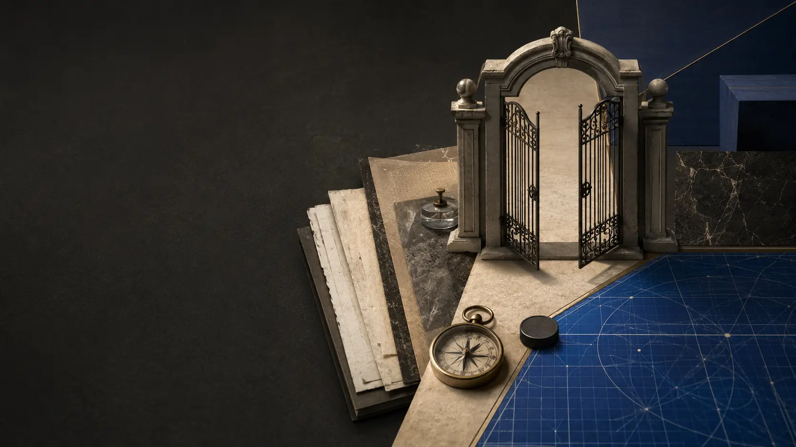

수상Awards
- 한국색채대상 블루상 · 2024
- 한국색채대상 혁신상 · 2022
- 서울 혁신상 우수상 · 2014
- ISAAC 국제학술대회 Best Paper Awards
- 경기도 슈퍼맨 창조 오디션 금상
- 서울과학기술대학교 석·박사 우수논문상

미디어융합 전공 공학박사 김준호는 음악, 영상, 출판, 제품, 연구와 사회적 가치를 하나의 인과관계로 연결합니다.Joonho Kim, Ph.D. in media convergence, connects music, video, publishing, products, research, and social value through one causal body.
기능이 작동해도 잘못된 태도를 경험하게 하면 실패입니다.판단이 결과를 바꾸지 못하면 주권도 아닙니다.A working feature still fails if it embodies the wrong attitude.Judgment is not sovereign if it cannot change the outcome.
인간 판단은 다섯 번째 축이 아니라 이 몸을 받아들일 최종 주권입니다.Human judgment is not a fifth axis; it is final sovereignty over acceptance.
어떤 관계를 몸으로 만드는가?What relation does it embody?
어떤 태도를 경험하게 하는가?What attitude does it make tangible?
실패를 추적하고 기억하는가?Can it trace and remember failure?
결과가 실제 구조를 바꾸는가?Does the result change the structure?
수상과 현재 역할을 검증 가능한 단위로 분리했습니다.Awards and current roles are separated into verifiable units.